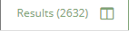

Work with Search Results
The Results Grid lists all documents meeting your search criteria in a grid format. The Results Grid is in both Visual and Advanced Search. Both views function the same. The column heading fields come from all available fields in your database.
-
Open and select a case card.

-
Click the Enter Case button.
-
The Visual Search Dashboard appears.

-
In Visual Search, the Results Grid is located on the right side of the dashboard and can be expanded by clicking the button in the right corner.

|

|
Note: In the Visual Search Dashboard, go to the Need to construct an Advanced Search? link to open the Advanced Search screen.
|
-
In Advanced Search, click the Results tab to display the Results Grid.

|
|
Note: In the Advanced Search view, there is an option to spilt your screen and view both tabs side by side by clicking .
|
Results Grid Interface
The Results Grid functions the same in both Visual and Advanced Search. However, the individual interfaces have some differences.
-
The item/document list contains an icon for the native file type (unknown file types display  ), BEGDOC link for each item, and column fields that were selected for the Case's coding form.
), BEGDOC link for each item, and column fields that were selected for the Case's coding form.

Clicking the Native File Icon will automatically download a copy of the native file that can then be opened in its native application.

-
In Visual Search, the number of documents meeting the search criteria display at the top of the dashboard.

-
In Advanced Search, on the Results tab, the number of documents meeting the search criteria display in parenthesis.

-
The display options are the same.
-
The number of items per page, and the total number of pages of search results, are shown above the grid on the right side of the pane.

-
Change the total number of rows displayed in the grid by selecting a different option from the drop down menu.

-
Use the left and right arrows to view additional result pages.

|
|
Note: The following features apply to the Results Grids in both Visual Search and Advanced Search.
|
Grid Display Options
You can customize your grid view by clicking  in the column heading. This opens the grid view options.
in the column heading. This opens the grid view options.

The options include:
-
Pin Column - includes options to pin left or right.
-
Autosize This Column
-
Autosize All Columns
-
Tally
-
Column Hide/Show
-
Reset Columns
For information about manipulating and sorting column fields in the grid, see Work with Grid Columns.
Mass Actions
You can perform mass actions on one, some, or all of the documents located in the grid by selecting the check box for each document. At least one document must be selected in order to perform a mass action.
For more information about mass actions, see Work with Mass Actions.
Work in the Document Viewer
If you want to view a specific document, click the BEGDOC ID hyperlink in the Results grid. The Document Viewer appears.

The Relationship pane is located on the left, the Viewer tabs are in the center and the Coding Form/Tag Palette panes are on the right.
-
The Relationship pane displays the default Template relationship menus. For information about the Relationship menus located on the left side in collapsed mode, see Overview: Relationships.
-
Each View tab has an associated toolbar. Permissions control access to the document view tabs and specific functions in their respective toolbars. For more information on working in the Document Viewer, see Overview: Document Viewer; Work with Document Viewer Tabs and Understand Document Viewer Options.
-
The current coding form/tag palette is located on the right side. The coding form drop-down menu displays the current coding form and all the coding forms that were previously configured for the case. For more information on working with coding forms or tag palettes, see Conduct Review.
-
You can add sub-tags to a coding form parent tag in the Document Viewer. For more information, see
Right-Click Tag Options in the Document Viewer.
Related Topics
Overview: Advanced Search
Work With Advanced Search
Overview: Visual Search
Work With the Visual Search Dashboard